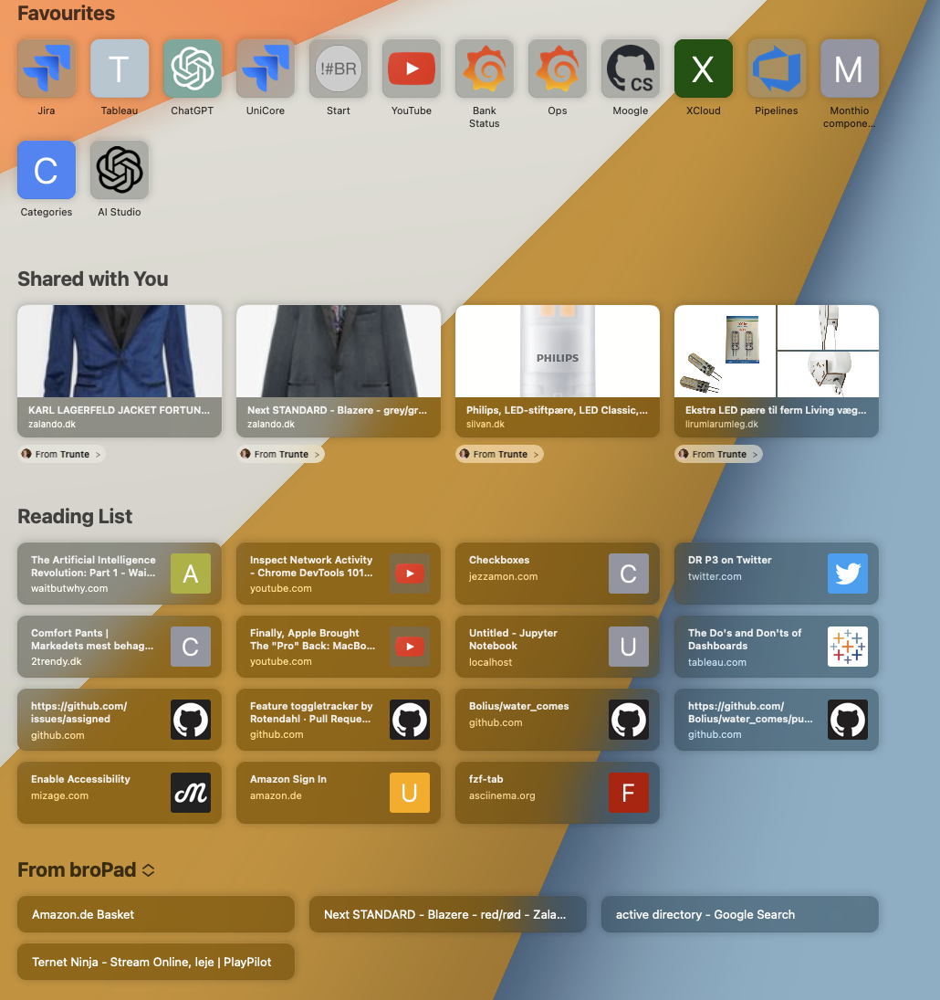

1 Introduction
The default start page in my browser of choice (safari) suck. The page looks nice but does not sync between devices, and shows a lot of useless information. Figure 1 shows the safari start page. The “favorites” section is a copy of the links in my favorites bar, which are already visible in the browser. The “Shared with you” section is a list of links that my partner has shared with me, they are all old and was never relevant. I don’t use the reading list in safari, the entries are all read or added by mistake. The bottom row is the most useful part, as it allows me to access tabs from my iPad and iPhone, but the tab group feature in safari superseeds this feature.


2 The solution
I would like my start page to present the configured links in a grid with the same layout on all devices. The links should be static to ensure “muscle memory” of their placement, similar to app placement on my phone home screen. The themeing should switch between light and dark mode depending on the system configuration. A design that meets these simple requirements can also be seen in figure Figure 1.
Implementing this design is can be done with the following html and css:
<!DOCTYPE html>
<html>
<head>
<meta charset="utf-8" />
<title>Start Page</title>
<link rel="stylesheet" href="variables.css" />
<link rel="stylesheet" href="style.css" />
</head>
<body>
<div id="container">
<a href="https://site-a.com">
<img src="https://logo-a.png" />
<p>Site A</p>
</a>
<a href="https://site-b.com">
<img src="https://logo-b.png" />
<p>Site B</p>
</a>
<a href="https://site-c.com">
<img src="https://logo-c.png" />
<p>Site C</p>
</a>
</div>
</body>
</html>To make the start page “responsive” we add a flexbox to the container div and set each link with a fixed max width. Adding the flex-wrap: wrap property ensures that the links flow nicely to the next row when making it work on phones and smaller browser windows as well.
2.1 Configuring the start page
To make the above html fit your taste requires:
- Setting your color theme in the
variables.cssfile. - Adding
<a>tags with each site you want to include.
This last point is a bit tedious, but could be done in a few minutes, but that’s no fun.
3 Overengineering the solution
The above solution of manually adding the <a> tags would be the smart way to proceed. Instead we are going to overengineer a tool that will do this for us, while stretching our haskell muscles. We will create a custom data format, a parser and a template engine to generate the html above. Lastly we will setup a CI/CD pipeline to automatically deploy the start page to github pages.
3.1 Defining the favorite sites grammar.
A favorite site consists of a url, a display name and a logo, the last two are optional. We could have used a format such as json or csv as the configuration file format, but instead we create our own format. Listing 1 shows an example of the format. The idea of the grammar is to have the non optional url in the center of a line, if there is a display name it precedes the url and points-> to the url defining the favorite. A logo optionally succeeds the url and points back <- to it.
Listing 1: Example grammar instance
some arbitrary text
* youtube.com/feed/subscriptions <- <logo-url>
* Github.com
* Data Science -> towardsdatascience.com
* Sentry.io
* Azure DevOps -> dev.azure.com <- <logo-url>A links file can contain two types of text lines: comments and favorites. A comment is any line that does not start with a * and a favorite is any line that does. A favorite must have a url, but can optionally have a display name and a logo as specified above. The grammar for the favorite sites file can be seen in BNF in Listing 2.
Listing 2: The favorite sites grammar in BNF form
favorites ::= * <favorite> \n <favorites> | ε
favorite ::= <display-name> -> <site> | <site>
display-name ::= <text>
site ::= <url> | <url> <- <url>
url ::= <url-spec>Where <text> is any string of characters that does not contain -> or <- or newlines and <url-spec> is any valid url. The grammar follows the lexeme convention of parsing, where we allow arbitrary whitespace between tokens, and treat any lines not prefixed with a * as whitespace.
The grammar is non left recursive, non ambiguous requiring no precedence rules, the only downside of the grammar is that it requires lookahead for display names. When reading the lexeme following a * we don’t know if it is a display name or url until we observe a -> or the lack of it. Since the display names are short this will not be a problem in practice1.
3.1.1 Full grammer file
3.2 Creating the project
To setup our haskell project we use cabal and initialize the project with
cabal initThis will create a start-page-generator.cabal file along with lib and test folders.
In typical haskell fashion we start by creating the types we need for our parser/(template engine). The types can be seen below:
Note that the logo type is a type alias for the url. The ParsedSite type has the optional display name and logo url via the maybe monad. Our template engine will map between the ParsedSite and Site types filling in the optional fields. For the display name we use the hostname of the url if no display name is present. A missing logo url is filled in with logo.clearbit.com//<hostname> which provides a logo for most sites.
3.2.1 Testing
Being a functional langauge Haskell has many great testing libaries from simple unit testing to property based testing. For this project we use the BDD style hspec library. The tests are simple assertions that given the specific input the code produces the expected output.3.3 Parsing the links file
Haskell is excellent for writing parsers, instead of writing clunky regexes that are hard to read and maintain we use the parser combinator library: parsec.
The main idea behind parser combinators is that you build a parser for each part of the grammar and then combine them to build a parser for the entire grammar. For parsing a site we need to parse a ‘*’ character, an optional display name, followed by an url and an optional logo url. This gives us the parser
parseSite :: Parser ParsedSite
parseSite = do
_ <- string "*"
whiteSpace
name <- optionMaybe $ try parseDisplayName
url <- parseUrl
logo <- optionMaybe $ try parseLogo
return (name, url, logo)Which is much easier to read than a regex. See the full parser below.
3.4 Generating the html
To map from the parsed we map from the parsed sites to the site type and replace the template tag in the html with the generated html.
4 Deploying the site
For deploying static html githubs pages is the obvious choice. Prior to setting up a deployment pipeline we first setup a testing pipeline. The testing pipeline uses the Setup haskell action which gives us a ghc environment. The test pipeline runs the tests and runs the hlint utility which ensures that the code is idiomatic haskell.
For the deploy pipeline it builds the code, persists the output to a branch called gh-pages and deploys the site to github pages. Both pipelines can be found on github and the deployed code can be found at rotendahl.dk/Start-Page-Generator/
Footnotes
I’m not overengineering my grammer for my overengineered project.↩︎